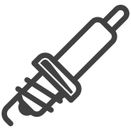

Приём заявки
Вы оставляете заявку, описываете симптомы, а мы уточняем модель Volvo, пробег, условия появления неисправности и историю обслуживания. Это помогает заранее сузить круг возможных причин и не тратить время на очевидные проверки.
Volvo Center — профильный автосервис для владельцев Volvo, которым важны аккуратное обслуживание, понятные рекомендации и честная диагностика. Мы работаем только с моделями Volvo, которые представлены на сайте, сохраняя единый высокий стандарт обслуживания.
Мы работаем с автомобилями Volvo с 2012 года. За это время накопили опыт в диагностике и ремонте разных моделей — от старых до современных. Специализируемся только на этой марке, поэтому знаем её конструктивные особенности и типичные неисправности.
Перед любым ремонтом проводим диагностику. По результатам обсуждаем с клиентом план работ и их стоимость. Цену называем до начала ремонта. Если какую-то работу можно отложить — предупреждаем об этом. Клиент всегда знает, что и за сколько будет сделано.
Устраняем стуки, вибрации, течи, падение тяги, рывки при переключении, износ опор, рычагов, сайлент-блоков, элементов ГРМ и связанных узлов. Такой ремонт редко бывает поверхностным: обычно требуется несколько этапов диагностики, чтобы точно определить причину неисправности и не заменить лишнего.
Сначала фиксируем симптомы, затем проверяем ошибки по блокам, тестируем узлы на ходу и на подъёмнике. При необходимости смотрим состояние опор двигателя и коробки, проверяем люфты, герметичность, уровень и состояние технических жидкостей, а также работу смежных систем.
Проверяем блоки управления, цепи питания, массу, CAN-шину, датчики, исполнительные механизмы, зарядку, стартер, генератор, кнопки, подогревы, освещение, центральный замок и другие системы. Часто проблема выглядит простой, но на деле связана с обрывом, окислением контакта, просадкой питания или ошибкой одного из электронных модулей.
Проверяем цепи поэтапно: питание, сигналы, соединения, нагрузку, состояние разъёмов и модулей. Используем мультиметр, тестовую нагрузку и диагностическое оборудование, чтобы не гадать, а найти конкретную точку отказа.
Восстанавливаем геометрию, устраняем вмятины, ремонтируем и подгоняем элементы кузова, убираем коррозию, восстанавливаем крепления, ремонтируем пороги, арки, двери, бамперы и локальные повреждения после парковок, сколов или ударов.
Сначала оцениваем объём повреждений и определяем, можно ли восстановить элемент, или его лучше заменить. Далее выполняем разборку, ремонт, подготовку поверхности, подгонку, окраску и сборку. После этого проверяем зазоры, закрытие дверей, отсутствие посторонних звуков и качество фиксации деталей.
Плановое техническое обслуживание — основа долгой и спокойной жизни Volvo. В него входит замена масла, фильтров, проверка технических жидкостей, осмотр тормозов, подвески, ремней, роликов, аккумулятора, уровня износа расходников и общая оценка состояния автомобиля.
Проводим обслуживание по пробегу и по состоянию автомобиля. Осматриваем машину комплексно, а не только меняем расходники по списку. Если видим износ, заранее сообщаем, что стоит контролировать в ближайшее время.
Проверяем ошибки по блокам, читаем параметры в реальном времени, смотрим работу двигателя, коробки, подвески, тормозов, электроники и смежных систем. Такая услуга особенно важна, если автомобиль ведёт себя нестабильно, но явной причины не видно.
Сначала проводим компьютерную проверку, затем сопоставляем данные с жалобами клиента и, если нужно, делаем инструментальную диагностику. Это помогает не только найти неисправность, но и понять её масштаб.
Аргонная сварка используется для ремонта алюминиевых, тонкостенных и ответственных деталей, где обычная сварка может быть слишком грубой. Это полезно при восстановлении элементов системы охлаждения, отдельных деталей кузова, креплений, поддонов и других узлов, требующих аккуратного нагрева и точной работы.
Сначала оцениваем материал и возможность восстановления, затем подготавливаем поверхность, выполняем сварку и проверяем шов на прочность и герметичность. Для Volvo это особенно важно, когда нужно сохранить заводскую геометрию и не повредить соседние элементы.

Автозапчасти подбор входит в общую стоимостьПодбор и поставка автозапчастей — это отдельная важная часть сервиса. Для Volvo особенно критично правильно подобрать деталь по VIN, году выпуска, двигателю и модификации. Одна и та же внешне похожая деталь может отличаться по креплению, электрической части или совместимости.
Мы подбираем детали по техническим параметрам, проверяем совместимость и предлагаем варианты по срокам и бюджету. При необходимости помогаем выбрать между оригиналом и качественным аналогом, если это допустимо по конкретному узлу.
Сезонная переобувка, балансировка, ремонт проколов, проверка давления, осмотр шин на повреждения и хранение комплекта до следующего сезона. Для Volvo важно, чтобы колёса были не только правильно собраны, но и сбалансированы — это влияет на комфорт, износ подвески и управляемость.
Снимаем колёса, проверяем состояние дисков и шин, выполняем монтаж, балансировку и контрольное давление. При хранении обеспечиваем правильные условия, чтобы резина не теряла свойства и не деформировалась.
Помогаем с оформлением и подбором страховых решений, если это предусмотрено сервисом. В эту услугу может входить консультация по ОСАГО, КАСКО, пролонгации полиса и базовая помощь в оформлении документов.
Уточняем параметры автомобиля и нужный тип страховки, после чего подбираем подходящий вариант. Если вопрос связан с ремонтом после страхового случая, подсказываем, какие документы понадобятся и как лучше организовать процесс.
Вы оставляете заявку, описываете симптомы, а мы уточняем модель Volvo, пробег, условия появления неисправности и историю обслуживания. Это помогает заранее сузить круг возможных причин и не тратить время на очевидные проверки.
На этапе приёмки фиксируем общее состояние автомобиля, проверяем уровень жидкостей, визуально оцениваем подкапотное пространство, подвеску, колёса, тормозные механизмы и наличие следов подтёков.
Подключаем диагностическое оборудование, читаем ошибки по блокам, смотрим текущие параметры в реальном времени и анализируем, как работают смежные системы.
Если одной компьютерной диагностики недостаточно, выполняем дополнительную проверку: измеряем компрессию, проверяем давление в системе, состояние подвески, тормозов, проводки и соединений. Это помогает подтвердить неисправность не по догадке, а по фактическим признакам.
Мы всегда объясняем, что является срочной проблемой, а что может подождать. Отдельно показываем, какие узлы требуют замены, почему они вышли из строя и как это влияет на дальнейшую эксплуатацию. После согласования называем стоимость и только потом приступаем к работе.
Перед ремонтом подбираем подходящие запчасти и проверяем совместимость. Это особенно важно для Volvo, где разные поколения и модификации могут иметь отличия по креплениям, разъёмам, допускам и программным настройкам. Такой подход снижает риск повторного визита.
Ремонт проводим по технической логике узла: сначала устраняем причину, потом проверяем сопряжённые элементы, а уже затем собираем и тестируем систему. Не ограничиваемся заменой очевидно неисправной детали, если рядом есть ресурсно ослабленные элементы.
После ремонта проверяем герметичность, работоспособность систем, ошибки по блокам, корректность запуска, поведение автомобиля на ходу и отсутствие повторных симптомов. Это особенно важно при ремонте двигателя, трансмиссии, тормозов и подвески.
При передаче автомобиля объясняем, что было сделано, что ещё нужно контролировать и через какой пробег стоит приехать на повторную проверку. Если есть гарантия, оформляем её документально. Клиент уезжает не с вопросами, а с понятным планом дальнейшей эксплуатации.
Приехал на диагностику с жалобой на потерю тяги и неровную работу на разгоне. Специалисты быстро связали симптомы с ошибками по системе управления и подробно объяснили, что именно влияет на поведение автомобиля. Понравилось, что не пытались сразу навязать большой ремонт: сначала показали причину, потом предложили решение поэтапно. После работ машина поехала ровно, исчезла вялость на педали, и стало понятнее, что делать дальше по обслуживанию.
Делала плановое обслуживание перед поездкой. Очень понравилось, что заранее согласовали стоимость, подробно перечислили, что войдёт в работу, и не затянули с приёмкой. Отдельно объяснили, на какие узлы обратить внимание в ближайший сезон и когда лучше приехать на повторную проверку. После визита осталось ощущение, что автомобиль действительно проверили комплексно, а не просто заменили расходники по списку.
Обратился из-за стуков в подвеске, которые особенно сильно проявлялись на неровностях. Диагностика оказалась точной: нашли не один, а сразу несколько изношенных элементов, которые в сумме и давали неприятный звук. Всё показали на месте, объяснили, что срочно, а что можно отложить. После ремонта машина стала ехать заметно тише, а управляемость вернулась к тому состоянию, которое ожидаешь от Volvo.
Приехала на сезонную проверку, потому что не хотелось рисковать перед дальней дорогой. Проверили аккумулятор, жидкости, состояние тормозов, подвеску и общее состояние автомобиля. По результатам сразу подсказали, что лучше заменить сейчас, а что спокойно доходит до следующего визита. Особенно понравилось, что рекомендации были практичными и без лишнего давления — ровно то, что нужно нормальному владельцу машины.
Была проблема по коробке: задержки, странные переключения и ощущение, что автомобиль работает не так, как должен. Диагностика оказалась точной, а результаты ремонта — предсказуемыми. Мне не просто назвали одну общую причину, а расписали по шагам, что проверили и почему пришли именно к этому решению. После ремонта коробка стала переключаться ровно, без лишних толчков, и появилось ощущение уверенности в машине.
Отмечу аккуратность и внимательное отношение с самого начала. Ничего лишнего не предложили, всё объясняли по делу и без сложных формулировок, но при этом чувствовалось, что специалисты действительно понимают специфику Volvo. Удобно, что можно было получить полную картину по автомобилю и сразу понять, что нужно делать сейчас, а что ещё можно контролировать. Для меня это именно тот уровень сервиса, который хочется рекомендовать.
Заполните форму, и мы свяжемся с вами, чтобы уточнить детали и подобрать удобное время визита.
Мы свяжемся с вами в ближайшее время.
Мы специализируемся только на Volvo, поэтому лучше понимаем особенности этих автомобилей и быстрее находим причину неисправности. Вместо универсального подхода здесь работает точечная диагностика и ремонт по логике конкретной модели и её узлов.
Да, гарантия распространяется на выполненные работы и установленные детали, срок зависит от вида ремонта и характера вмешательства. Мы оформляем гарантию документально и объясняем, на что именно она действует.
Лучше записаться заранее, но при срочной ситуации мы стараемся найти ближайшее окно. Если проблема связана с безопасностью движения, стараемся среагировать максимально быстро.
Да, сервис работает именно с автомобилями Volvo. Это позволяет глубже понимать типичные неисправности, особенности платформ и взаимосвязь между системами.
Цена зависит от задачи, но базовая диагностика начинается от 1 500 ₽. Если требуется более глубокая проверка с инструментальными измерениями, стоимость может быть выше.
Да, после диагностики мы называем стоимость заранее и только потом начинаем работы. Это позволяет спокойно принять решение и понять объём предстоящего ремонта.